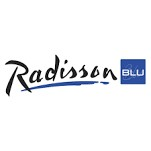

Hideat Tekie Hailu
Berufserfarung
10/2021 bis Jetzt
Advisor Customer Service (1st Level IT-Support)
Concentrix
Unterstützung der Werbetreibenden und Agenturen bei den verschiedenen Anfragen, die über die verschiedenen Kommunikationskanäle generiert werden.
Bereitstellung von Pre- und Post-Sales-Support für alle Self-Service-Werbeprodukte.
Produkt- und Tool-Support zur Verbesserung des Kundenerlebnisses. Nutzung von Tools und Systemen zur Identifizierung von Kundenanliegen, die in ihren Anfragen angesprochen werden.
Eskalation von Kundenanfragen an die entsprechenden Gruppen zur Lösung.
Zeitnahe Lösung von Themen, proaktive Kommunikation von Fortschritten an die Kunden und proaktives Erkennen von Bereichen, in denen die Kunden die Nutzung unserer Lösungen verbessern können.
Aufrechterhaltung einer hohen Kundenzufriedenheit in Bezug auf Online-Werbung bei gleichzeitiger Repräsentation einer großen Marke auf Social-Media-Plattformen.
01/2021 bis 11/2021
Telefonische Kundenberater (1st Level IT-Support) INVIRES Tochterunternehmen der Webhelp Home Office
Concentrix + Webhelp
Durchführung von Telemarketing-, Telesales-Projekten
Betreuung von Infolines
Beantwortung der Anfragen zu den angebotenen Produkten
Eskalation der Anfragen zu den betroffenen Partnern
Pflege der Kundendaten in das vorhandene System
07/2020 bis 10/2020
Receptionist My Cloud Transit Hotel Frankfurt Flughafen
Tätigkeiten an der Rezeption
11/2019 bis 03/2020
Receptionist & Facilities Assistant Hays professional Solutions GmbH, Frankfurt am Main
Eingesetzt in einem Investmentunternehmen
Telefonzentrale bedienen und Gespräche weiterleiten
Empfangsdienst für Kunden und Mitarbeiter anderer Niederlassungen
Zugangskarten Vorbereitung und Ausgabe
Rechnungen auf Richtigkeit prüfen und zur Zahlung weiterleiten
Bestellungen vorbereiten und Lieferungen verfolgen
05/2019 bis 09/2019
Bildungszentrum Bauer GmbH
C1 Deutschkurs
12/2018 bis 03/2019
Reservation Agent (Sihot Hotelsoftware)
Motel One, Frankfurt am Main
Annahme und Bearbeitung von Gruppen- und Messeanfragen
Verarbeitung von Reservierungen und Eingabe in die Hotelsoftware
Erstellung von Proforma- und Schluss-Rechnungen und Eingabe in die Hotelsoftware
Prüfung von Kommissionsrechnungen
08/2018 bis 12/2018
Reservation Agent (Fidelio Hotelsoftware)
Turm Hotel, Frankfurt am Main
Annahme und Bearbeitung von Gruppen, Messe- und Tagungsanfragen
Betreuung von Vertragskunden und Klärung von Fragen bei Konsortien
Verarbeitung von Reservierungen und Eingabe in die Hotelsoftware
Erstellung von Proforma- und Schluss-Rechnungen und Eingabe in die Hotelsoftware
Prüfung von Kommissionsrechnungen
Prüfung der Tagesabschlüsse nebst Klärung und Korrekturen
Tätigkeiten an der Rezeption, Telefonistin, Bürotätigkeiten.
04/2018 bis 07/2018

Front Office Tournant/Receptionist (Opera hotel software)
Radisson Blu Frankfurt am Main
Empfangen und Verabschieden der Gäste (Check-in und out)
Bedienen der Telefonanlage – Anfragen bearbeiten und weiterleiten (Schnittstelle zwischen den Abteilungen)
Informationszentrale – Auskünfte erteilen (Wegbeschreibungen, Restaurantempfehlungen, Leistungen des Hotels
Gästeservice – Anfragen bearbeiten, Wünsche erfüllen
Verbuchen der Leistungen auf Gästekonten und Kassenführung
Reservierungsannahme- und Bearbeitung (in Vertretung)
11/2017 bis 05/2018

British Air Passenger Services Agent am Frankfurter Flughafen
Menzies Aviation Deutschland GmbH & Co. KG
EDV - Amadeus Altéa Suite Passenger Service System (PSS)
Selbständige Abwicklung der gesamten Passagierabfertigung, Check-in die Fluggäste und des Gepäcks, unter Einhaltung der Ground Handling Manuals der Airlines.
Überprüfung von Flug- und Reisedokumenten unter Einhaltung der Visa- und Einreisebestimmungen verschiedener Länder
Bordkartenvergabe, Tätigkeiten der Flugvorbereitung, Boarding.
Betreuung der Passagiere bei Ankunft und Gepäckunregelmäßigkeiten.
Weiterführende Unterstützung der Passagiere bei Flugverspätung oder Streichungen
Überwachung von Sicherheitsbestimmungen der Airlines
Administrative Aufgaben wie Flugvor- und Nachbereitungen
07/2016 bis 12/2017
Lufthansa Passenger Service Agent am Frankfurter Flughafen
Securitas Flugverkehr Services GmbH & Co. KG
Steuerung von Kundenberatung in der Schalterhalle
Unterstützung und Beratung von Fluggästen bei der Nutzung der Check-in-Automaten
Proaktive Ansprache und Begrüßung von Kunden beim Betreten der Schalterhalle
Unterstützung von Fluggästen bei den automatischen Gepäckabgabeschaltern
Vorkontrolle des Handgepäcks im Auftrag der Lufthansa
03/2016 bis 11/2016
Empfangsmitarbeiterin (HRS 3 Hotel Software)
Hotel Agat, Hofheim-Wallau
Check-in, Check-out, Reservierungssystempflege
Gästebetreuung, Pflege der Hotelsoftware
Buchungsportale, Angebotserstellung, Geldeingang
Preiskontrolle, administrative Aufgaben.
11/2011 bis 05/2013
Reservation Agent (Opera hotel software
Radisson Blu Hotel, Addis Abeba, Äthiopien
Beantwortung und Bearbeitung aller Reservierungsanfragen
Organisation des Shuttle Service
06/2011 bis 10/2011
Hotelangestellte (Local hotel software)
Churchill Hotel, Addis Abeba, Äthiopien
Tätigkeiten an der Rezeption, Telefonistin
Sekretariatstätigkeiten
Reservierungsmanagement
Aus-&Schulbildung
09/2005 bis 07/2008
Unity University TEVT College
Tegbareed TEVT Training Institute Addis Abeba, Äthiopien
SSOM (Secretarial Science and Office Management)
Anerkannt durch die IHK als Kauffrau für Büromanagement
09/2006 bis 08/2007
Catering and Tourism Training Institute
Addis Abeba, Äthiopien
Ausbildung zur Hotelfachfrau /Front Office Operation
09/2003 bis 08/2005
Abschluss: High-School
Shimelis Habte, Addis Ababa, Äthiopien
Sprachen
Amharisch:Muttersprache
Tigrinja:Muttersprache
Englisch: fließend in Wort und Schrift
Deutsch: sehr gute Kenntnisse (C1)
Französisch: Grundkenntnisse, Sprachkurs DELF A2
EDV
Microsoft Office (Word, Excel, Outlook, HTML, CSS): Expertenkenntnisse
Hotel software: OPERA, Fidelio, Sihot, HRS 3: Expertenkenntnisse
Cloudbeds: Expedia, Booking.com, Orbitz, HRS Grundkenntnisse
Airlinesoftware: Altea Grundkenntnisse
Zertifikate
British Airways:
RampSafety/2018
Insafe Hands/2018
Fire-For Terminal Based Managers & Fire Wardens/2018
Flyability/2018
Business Integrity/2018
Ground Security and Disruptive Passenger/2018
Radisson Blu:
Yes I Can/2012